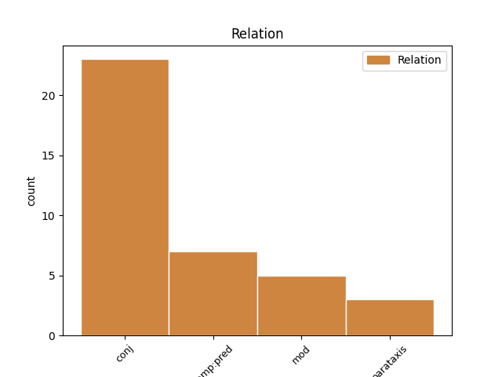
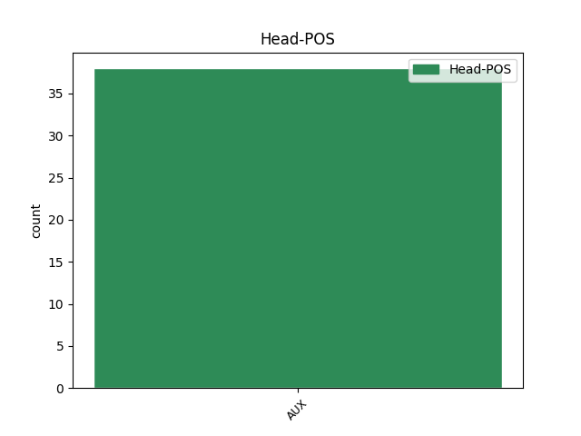
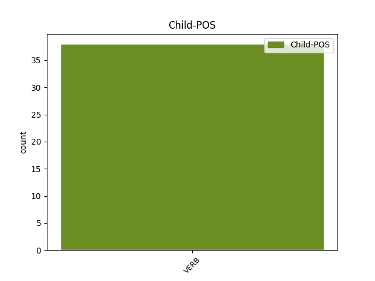

Distribution of features within this leaf



Agreement Rules sorted by frequency.
- When the dependent token is the conjunct(conj) of the head token, and the head token is AUX and the dependent token is VERB.
1 Vas ir AUX Vpi20s Mood=Ind|Number=Sing|Person=2|Tense=Pres|VerbForm=Fin 0 _ _ _
2 andando _ _ _ _ 0 _ _ _
3 por _ _ _ _ 0 _ _ _
4 lo _ _ _ _ 0 _ _ _
5 monte _ _ _ _ 0 _ _ _
6 e _ _ _ _ 0 _ _ _
7 miras mirar VERB Vpi20s Mood=Ind|Number=Sing|Person=2|Tense=Pres|VerbForm=Fin 1 conj _ _
8 para _ _ _ _ 0 _ _ _
9 as _ _ _ _ 0 _ _ _
10 uces _ _ _ _ 0 _ _ _
11 , _ _ _ _ 0 _ _ _
12 as _ _ _ _ 0 _ _ _
13 acacias _ _ _ _ 0 _ _ _
14 , _ _ _ _ 0 _ _ _
15 as _ _ _ _ 0 _ _ _
16 xestas _ _ _ _ 0 _ _ _
17 e _ _ _ _ 0 _ _ _
18 os _ _ _ _ 0 _ _ _
19 toxos _ _ _ _ 0 _ _ _
20 de _ _ _ _ 0 _ _ _
21 unha _ _ _ _ 0 _ _ _
22 maneira _ _ _ _ 0 _ _ _
23 que _ _ _ _ 0 _ _ _
24 che _ _ _ _ 0 _ _ _
25 fai _ _ _ _ 0 _ _ _
26 apreciar _ _ _ _ 0 _ _ _
27 moito _ _ _ _ 0 _ _ _
28 máis _ _ _ _ 0 _ _ _
29 o _ _ _ _ 0 _ _ _
30 que _ _ _ _ 0 _ _ _
31 ves _ _ _ _ 0 _ _ _
32 . _ _ _ _ 0 _ _ _
1 O _ _ _ _ 0 _ _ _
2 que _ _ _ _ 0 _ _ _
3 pasa pasar VERB Vpi30s Mood=Ind|Number=Sing|Person=3|Tense=Pres|VerbForm=Fin 4 comp:pred _ _
4 é ser AUX Vpi30s Mood=Ind|Number=Sing|Person=3|Tense=Pres|VerbForm=Fin 0 _ _ _
5 que _ _ _ _ 0 _ _ _
6 como _ _ _ _ 0 _ _ _
7 non _ _ _ _ 0 _ _ _
8 quero _ _ _ _ 0 _ _ _
9 pasar _ _ _ _ 0 _ _ _
10 toda _ _ _ _ 0 _ _ _
11 a _ _ _ _ 0 _ _ _
12 vida _ _ _ _ 0 _ _ _
13 sen _ _ _ _ 0 _ _ _
14 tocar _ _ _ _ 0 _ _ _
15 Bach _ _ _ _ 0 _ _ _
16 ou _ _ _ _ 0 _ _ _
17 Scarlatti _ _ _ _ 0 _ _ _
18 teño _ _ _ _ 0 _ _ _
19 que _ _ _ _ 0 _ _ _
20 coller _ _ _ _ 0 _ _ _
21 obras _ _ _ _ 0 _ _ _
22 de _ _ _ _ 0 _ _ _
23 outros _ _ _ _ 0 _ _ _
24 instrumentos _ _ _ _ 0 _ _ _
25 . _ _ _ _ 0 _ _ _
1 A _ _ _ _ 0 _ _ _
2 visión _ _ _ _ 0 _ _ _
3 que _ _ _ _ 0 _ _ _
4 deita _ _ _ _ 0 _ _ _
5 o _ _ _ _ 0 _ _ _
6 autor _ _ _ _ 0 _ _ _
7 é ser AUX Vpi30s Mood=Ind|Number=Sing|Person=3|Tense=Pres|VerbForm=Fin 0 _ _ _
8 a _ _ _ _ 0 _ _ _
9 a _ _ _ _ 0 _ _ _
10 vez _ _ _ _ 0 _ _ _
11 mítica _ _ _ _ 0 _ _ _
12 e _ _ _ _ 0 _ _ _
13 realista _ _ _ _ 0 _ _ _
14 , _ _ _ _ 0 _ _ _
15 por _ _ _ _ 0 _ _ _
16 lo _ _ _ _ 0 _ _ _
17 que _ _ _ _ 0 _ _ _
18 o _ _ _ _ 0 _ _ _
19 poeta _ _ _ _ 0 _ _ _
20 , _ _ _ _ 0 _ _ _
21 demasiadas _ _ _ _ 0 _ _ _
22 veces _ _ _ _ 0 _ _ _
23 , _ _ _ _ 0 _ _ _
24 entrega entregar VERB Vpi30s Mood=Ind|Number=Sing|Person=3|Tense=Pres|VerbForm=Fin 7 mod _ _
25 un _ _ _ _ 0 _ _ _
26 verso _ _ _ _ 0 _ _ _
27 cheo _ _ _ _ 0 _ _ _
28 de _ _ _ _ 0 _ _ _
29 lugares _ _ _ _ 0 _ _ _
30 comúns _ _ _ _ 0 _ _ _
31 : _ _ _ _ 0 _ _ _
1 É ser AUX Vpi30s Mood=Ind|Number=Sing|Person=3|Tense=Pres|VerbForm=Fin 0 _ _ _
2 unha _ _ _ _ 0 _ _ _
3 de _ _ _ _ 0 _ _ _
4 as _ _ _ _ 0 _ _ _
5 grandes _ _ _ _ 0 _ _ _
6 artes _ _ _ _ 0 _ _ _
7 que _ _ _ _ 0 _ _ _
8 nos _ _ _ _ 0 _ _ _
9 toca _ _ _ _ 0 _ _ _
10 un _ _ _ _ 0 _ _ _
11 nervio _ _ _ _ 0 _ _ _
12 , _ _ _ _ 0 _ _ _
13 unha _ _ _ _ 0 _ _ _
14 emoción _ _ _ _ 0 _ _ _
15 que _ _ _ _ 0 _ _ _
16 as _ _ _ _ 0 _ _ _
17 outras _ _ _ _ 0 _ _ _
18 non _ _ _ _ 0 _ _ _
19 son _ _ _ _ 0 _ _ _
20 quen _ _ _ _ 0 _ _ _
21 de _ _ _ _ 0 _ _ _
22 tocar _ _ _ _ 0 _ _ _
23 ... _ _ _ _ 0 _ _ _
24 chega chegar VERB Vpi30s Mood=Ind|Number=Sing|Person=3|Tense=Pres|VerbForm=Fin 1 parataxis _ _
25 a _ _ _ _ 0 _ _ _
26 o _ _ _ _ 0 _ _ _
27 corazón _ _ _ _ 0 _ _ _
28 de _ _ _ _ 0 _ _ _
29 outra _ _ _ _ 0 _ _ _
30 maneira _ _ _ _ 0 _ _ _
31 . _ _ _ _ 0 _ _ _
Disagree Examples:
1 Podiamos poder AUX Vii10p Mood=Ind|Number=Plur|Person=1|Tense=Imp|VerbForm=Fin 0 _ _ _
2 seguir _ _ _ _ 0 _ _ _
3 , _ _ _ _ 0 _ _ _
4 pero _ _ _ _ 0 _ _ _
5 de _ _ _ _ 0 _ _ _
6 momento _ _ _ _ 0 _ _ _
7 abonda abondar VERB Vpi30s Mood=Ind|Number=Sing|Person=3|Tense=Pres|VerbForm=Fin 1 conj _ SpaceAfter=No
8 . _ _ _ _ 0 _ _ _
1 Roberto _ _ _ _ 0 _ _ _
2 Blanco _ _ _ _ 0 _ _ _
3 Valdés _ _ _ _ 0 _ _ _
4 afirma _ _ _ _ 0 _ _ _
5 que _ _ _ _ 0 _ _ _
6 " _ _ _ _ 0 _ _ _
7 Touriño _ _ _ _ 0 _ _ _
8 pode _ _ _ _ 0 _ _ _
9 seguir _ _ _ _ 0 _ _ _
10 con _ _ _ _ 0 _ _ _
11 a _ _ _ _ 0 _ _ _
12 súa _ _ _ _ 0 _ _ _
13 retórica _ _ _ _ 0 _ _ _
14 , _ _ _ _ 0 _ _ _
15 pero _ _ _ _ 0 _ _ _
16 é ser AUX Vpi30s Mood=Ind|Number=Sing|Person=3|Tense=Pres|VerbForm=Fin 0 _ _ _
17 como _ _ _ _ 0 _ _ _
18 se _ _ _ _ 0 _ _ _
19 aspirase aspirar VERB Ves30s Mood=Sub|Number=Sing|Person=3|Tense=Past|VerbForm=Fin 16 comp:pred _ _
20 a _ _ _ _ 0 _ _ _
21 tocar _ _ _ _ 0 _ _ _
22 a _ _ _ _ 0 _ _ _
23 lúa _ _ _ _ 0 _ _ _
24 con _ _ _ _ 0 _ _ _
25 a _ _ _ _ 0 _ _ _
26 man _ _ _ _ 0 _ _ _
27 " _ _ _ _ 0 _ _ _
28 porque _ _ _ _ 0 _ _ _
29 " _ _ _ _ 0 _ _ _
30 non _ _ _ _ 0 _ _ _
31 hai _ _ _ _ 0 _ _ _
32 agora _ _ _ _ 0 _ _ _
33 , _ _ _ _ 0 _ _ _
34 nin _ _ _ _ 0 _ _ _
35 existiu _ _ _ _ 0 _ _ _
36 nunca _ _ _ _ 0 _ _ _
37 un _ _ _ _ 0 _ _ _
38 só _ _ _ _ 0 _ _ _
39 estudo _ _ _ _ 0 _ _ _
40 de _ _ _ _ 0 _ _ _
41 opinión _ _ _ _ 0 _ _ _
42 que _ _ _ _ 0 _ _ _
43 lle _ _ _ _ 0 _ _ _
44 atribúa _ _ _ _ 0 _ _ _
45 a _ _ _ _ 0 _ _ _
46 maioría _ _ _ _ 0 _ _ _
47 absoluta _ _ _ _ 0 _ _ _
48 a _ _ _ _ 0 _ _ _
49 o _ _ _ _ 0 _ _ _
50 Partido _ _ _ _ 0 _ _ _
51 Socialista _ _ _ _ 0 _ _ _
52 " _ _ _ _ 0 _ _ _
53 . _ _ _ _ 0 _ _ _
1 Teresa _ _ _ _ 0 _ _ _
2 Casal _ _ _ _ 0 _ _ _
3 é ser AUX Vpi30s Mood=Ind|Number=Sing|Person=3|Tense=Pres|VerbForm=Fin 0 _ _ _
4 integrante _ _ _ _ 0 _ _ _
5 de _ _ _ _ 0 _ _ _
6 o _ _ _ _ 0 _ _ _
7 goberno _ _ _ _ 0 _ _ _
8 municipal _ _ _ _ 0 _ _ _
9 de _ _ _ _ 0 _ _ _
10 coalición _ _ _ _ 0 _ _ _
11 en _ _ _ _ 0 _ _ _
12 Pontevedra _ _ _ _ 0 _ _ _
13 e _ _ _ _ 0 _ _ _
14 en _ _ _ _ 0 _ _ _
15 as _ _ _ _ 0 _ _ _
16 pasadas _ _ _ _ 0 _ _ _
17 eleccións _ _ _ _ 0 _ _ _
18 encabezou encabezar VERB Vei30s Mood=Ind|Number=Sing|Person=3|Tense=Past|VerbForm=Fin 3 conj _ _
19 a _ _ _ _ 0 _ _ _
20 lista _ _ _ _ 0 _ _ _
21 electoral _ _ _ _ 0 _ _ _
22 de _ _ _ _ 0 _ _ _
23 o _ _ _ _ 0 _ _ _
24 PSdeG _ _ _ _ 0 _ _ _
25 . _ _ _ _ 0 _ _ _
1 Con _ _ _ _ 0 _ _ _
2 a _ _ _ _ 0 _ _ _
3 fin _ _ _ _ 0 _ _ _
4 de _ _ _ _ 0 _ _ _
5 lograr _ _ _ _ 0 _ _ _
6 o _ _ _ _ 0 _ _ _
7 máximo _ _ _ _ 0 _ _ _
8 consenso _ _ _ _ 0 _ _ _
9 para _ _ _ _ 0 _ _ _
10 un _ _ _ _ 0 _ _ _
11 novo _ _ _ _ 0 _ _ _
12 texto _ _ _ _ 0 _ _ _
13 estatutario _ _ _ _ 0 _ _ _
14 que _ _ _ _ 0 _ _ _
15 ou _ _ _ _ 0 _ _ _
16 é ser AUX Vpi30s Mood=Ind|Number=Sing|Person=3|Tense=Pres|VerbForm=Fin 0 _ _ _
17 de _ _ _ _ 0 _ _ _
18 todos _ _ _ _ 0 _ _ _
19 ou _ _ _ _ 0 _ _ _
20 non _ _ _ _ 0 _ _ _
21 será ser VERB Vfi30s Mood=Ind|Number=Sing|Person=3|Tense=Fut|VerbForm=Fin 16 conj _ SpaceAfter=No
22 . _ _ _ _ 0 _ _ _
1 Pero _ _ _ _ 0 _ _ _
2 esta _ _ _ _ 0 _ _ _
3 obra _ _ _ _ 0 _ _ _
4 aparca _ _ _ _ 0 _ _ _
5 , _ _ _ _ 0 _ _ _
6 a _ _ _ _ 0 _ _ _
7 o _ _ _ _ 0 _ _ _
8 noso _ _ _ _ 0 _ _ _
9 entender _ _ _ _ 0 _ _ _
10 , _ _ _ _ 0 _ _ _
11 de _ _ _ _ 0 _ _ _
12 xeito _ _ _ _ 0 _ _ _
13 case _ _ _ _ 0 _ _ _
14 definitivo _ _ _ _ 0 _ _ _
15 o _ _ _ _ 0 _ _ _
16 proxecto _ _ _ _ 0 _ _ _
17 de _ _ _ _ 0 _ _ _
18 Peter _ _ _ _ 0 _ _ _
19 Eisenman _ _ _ _ 0 _ _ _
20 para _ _ _ _ 0 _ _ _
21 o _ _ _ _ 0 _ _ _
22 Novo _ _ _ _ 0 _ _ _
23 Riazor _ _ _ _ 0 _ _ _
24 , _ _ _ _ 0 _ _ _
25 que _ _ _ _ 0 _ _ _
26 fora ser AUX Vli30s Mood=Ind|Number=Sing|Person=3|Tense=Pqp|VerbForm=Fin 0 _ _ _
27 apresentado _ _ _ _ 0 _ _ _
28 por _ _ _ _ 0 _ _ _
29 lo _ _ _ _ 0 _ _ _
30 presidente _ _ _ _ 0 _ _ _
31 de _ _ _ _ 0 _ _ _
32 o _ _ _ _ 0 _ _ _
33 Deportivo _ _ _ _ 0 _ _ _
34 en _ _ _ _ 0 _ _ _
35 2003 _ _ _ _ 0 _ _ _
36 e _ _ _ _ 0 _ _ _
37 que _ _ _ _ 0 _ _ _
38 incluía incluír VERB Vii30s Mood=Ind|Number=Sing|Person=3|Tense=Imp|VerbForm=Fin 26 conj _ SpaceAfter=No
39 , _ _ _ _ 0 _ _ _
40 practicamente _ _ _ _ 0 _ _ _
41 , _ _ _ _ 0 _ _ _
42 case _ _ _ _ 0 _ _ _
43 todas _ _ _ _ 0 _ _ _
44 as _ _ _ _ 0 _ _ _
45 instalacións _ _ _ _ 0 _ _ _
46 contidas _ _ _ _ 0 _ _ _
47 en _ _ _ _ 0 _ _ _
48 este _ _ _ _ 0 _ _ _
49 proxecto _ _ _ _ 0 _ _ _
50 xa _ _ _ _ 0 _ _ _
51 en _ _ _ _ 0 _ _ _
52 construción _ _ _ _ 0 _ _ _
53 , _ _ _ _ 0 _ _ _
54 ademais _ _ _ _ 0 _ _ _
55 de _ _ _ _ 0 _ _ _
56 o _ _ _ _ 0 _ _ _
57 propio _ _ _ _ 0 _ _ _
58 campo _ _ _ _ 0 _ _ _
59 de _ _ _ _ 0 _ _ _
60 fútbol _ _ _ _ 0 _ _ _
61 , _ _ _ _ 0 _ _ _
62 hostalaría _ _ _ _ 0 _ _ _
63 múltipla _ _ _ _ 0 _ _ _
64 e _ _ _ _ 0 _ _ _
65 hotel _ _ _ _ 0 _ _ _
66 de _ _ _ _ 0 _ _ _
67 luxo _ _ _ _ 0 _ _ _
68 , _ _ _ _ 0 _ _ _
69 parque _ _ _ _ 0 _ _ _
70 infantil _ _ _ _ 0 _ _ _
71 , _ _ _ _ 0 _ _ _
72 amplos _ _ _ _ 0 _ _ _
73 espazos _ _ _ _ 0 _ _ _
74 verdes _ _ _ _ 0 _ _ _
75 e _ _ _ _ 0 _ _ _
76 aparcadoiros _ _ _ _ 0 _ _ _
77 , _ _ _ _ 0 _ _ _
78 tanto _ _ _ _ 0 _ _ _
79 públicos _ _ _ _ 0 _ _ _
80 coma _ _ _ _ 0 _ _ _
81 privados _ _ _ _ 0 _ _ _
82 . _ _ _ _ 0 _ _ _